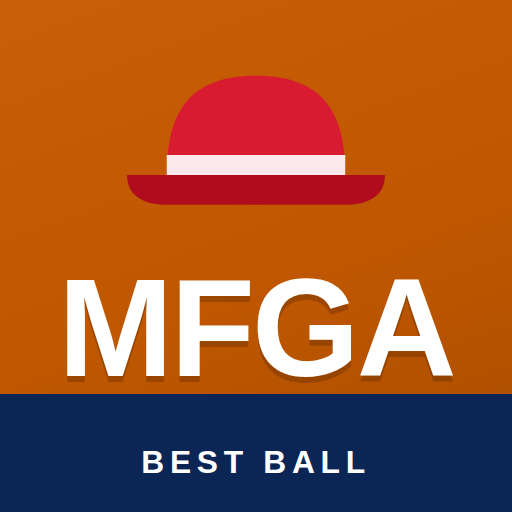

The official seal. Tremendous. Everybody says so.
On a phone the button may just open the picture. If it does: press and hold the logo, then Save to Photos (iPhone) or Download image (Android). Use it as the group-chat photo, a contact icon, a wallpaper, a tattoo reference. We are not liable for the tattoo.
It is not in the App Store and never will be. It is a web page that behaves like an app: its own icon, full screen, no browser bars, and it updates itself every hour during games. Nothing to install, nothing to trust, nothing to pay.
It lands on your home screen with the logo above. Tap it and you're in. If you added a bookmark before today, delete it and add it again so it picks up the new icon.
Samsung Internet works too: tap the menu (three lines), then Add page to, then Home screen.
The same page as the website, just dressed as an app: standings with movement arrows, every week's optimal lineup under its own tab, the stump speeches, and the MFGA Radio player on each week that has an episode. It refreshes on its own every hour while games are on, so pull to refresh when you open it on a Sunday and the numbers are current. No accounts, no notifications, no data collected. It cannot see your Yahoo login and does not want to.
{kind=link}
{kind=link}
{kind=link}